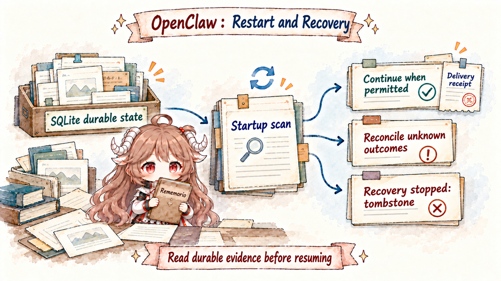
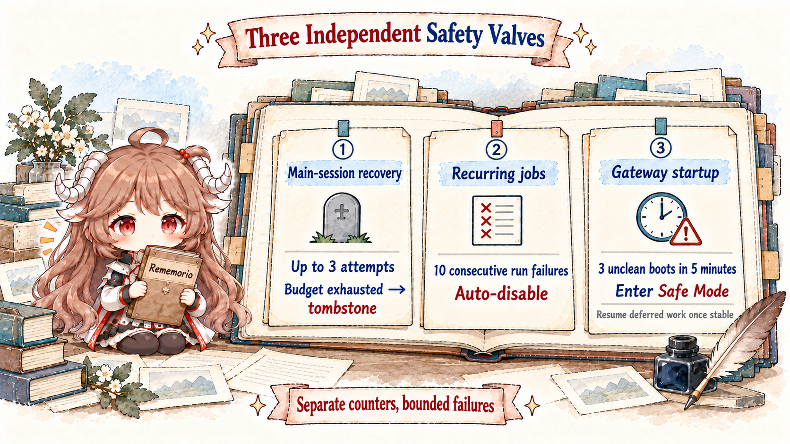

Imagine an operations Agent that checks for noteworthy changes every half hour, publishes a report at 07:00 on weekdays, launches an isolated investigation when a build event arrives, notifies the requester as soon as a long task finishes, and continues an interrupted conversation after a Gateway upgrade. A single while (true) { sleep(...) } loop cannot answer the difficult questions: should missed ticks be replayed, where does each run live, how do you prevent duplicate external sends, and who decides what to do after the process disappears halfway through a turn?
OpenClaw assigns those jobs to different components. The scheduler decides when to trigger. A session and Agent runtime execute one turn. Execution owners and cron history record the result. Channel delivery stores receipts for external sends. Recovery acts only on those persisted records. In-memory promises, connections, and model streams may disappear, but the next process must still be able to tell whether work started, completed, or reached the user.
Questions this article answers.How monitoring becomes an ordinary Automation; how execution context differs from delivery routing; what current and explicit session targets do; which records distinguish execution from delivery; how restart resumes interrupted work; how unknown effects are reconciled; and what tombstone, autoDisabled, and the crash-loop breaker each limit.
Source scope.The article is pinned to f4e3844. Defaults, attempt counts, and retention windows describe that snapshot. The stable lessons are to persist run state, make external sends deduplicable, and reconcile unknown effects before choosing further actions under current authority.
1. How time-based work wakes the Agent
1.1 Separate triggering, execution, recording, and delivery
| Question | Component | Persisted record | What it cannot prove |
|---|---|---|---|
| When should work wake? | Automations scheduler or hook | Job, schedule, next run, trigger state | Proof that the work completed |
| Who is executing? | Session controller, agent run, or child runtime | sessionKey, runId, runtime ownership | Proof that output reached a user |
| What happened? | Execution records, cron history, transcript | Run status, result, interruption reason | The next scheduler tick |
| Did the user receive it? | Delivery queue, receipt, requester session | Delivery claim, idempotency key, provider receipt | Permission to replay unsafe work |
Most “occasional duplicate reminder” and “task vanished after restart” failures come from merging two of these columns. A run record that still says running does not prove a process is alive. A succeeded agent run does not prove delivery. An enabled cron job does not mean every occurrence missed during downtime should be replayed.
1.2 Time enters through more than a timer
External messages, at/every/cron schedules, authenticated webhooks, supervised streams, background command completion, and restart-sentinel continuations can all wake OpenClaw. Each retains its source identity, run identity, and duplicate-handling rules before reaching an Agent turn.
Automations drive scheduled monitoring. Command, child, hook, and restart follow-ups enter ordinary session execution without requiring a monitoring job or enabled Cron. An exec completion also waits for the initiating turn to finish, preventing the notification from superseding its own requester.
1.3 Monitoring becomes an ordinary editable Job
The dedicated Heartbeat executor and heartbeat_respond are retired in this snapshot. The default proactive-job factory creates an ordinary agentTurn job: usually every 30 minutes, targeting the main conversation through session:, with idleOnly=true, skipIfScratchEmpty=true, and owner delivery. A provider may supply a different initial cadence.
Setup provisions this Proactive check once for the ambient owner. Its provisioning receipt survives; deleting or editing the job remains effective across startup and configuration reload. Other agents need explicitly created monitoring jobs.
1.4 Migration preserves state and subsequent edits
The Heartbeat migration contract converts existing monitors to ordinary jobs, preserving identity, history, scratch bytes and revision, disabled and autoDisabled state, phase anchor, and pending occurrences. Doctor verifies canonical job persistence before removing legacy heartbeat configuration and backs up the old HEARTBEAT.md.
Repeated Doctor runs, startup, and configuration reload preserve user edits and deletions. Schedule, scratch, activeHours, idleOnly, and delivery now own monitoring behavior. Disabling Cron stops these scheduled checks; completion events still use ordinary session execution.
1.5 Quiet outcomes use the ordinary Automation protocol
The default prompt reads the job scratch and relevant session context, acts when necessary, and returns NO_REPLY when there is nothing to report. A running job can use Automations record_result for structured outcomes such as no_change, progress, done, blocked, or needs_attention. no_change suppresses automatic delivery; a real execution error still fails the run.
Heartbeat-specific duplicate-alert suppression and no-route execution skipping are removed. Repeated alerts can be sent again; missing delivery routing does not prevent the check from executing. An explicitly present empty scratch can skip a check, while absent scratch permits execution.
// Key fields of a default monitoring job; the service stores identity and state.
{
schedule: { kind: "every", everyMs: 1800000 },
sessionTarget: "session:agent:main:main",
idleOnly: true,
payload: {
kind: "agentTurn",
message: "Read the monitoring checklist; use NO_REPLY when there is nothing to report.",
skipIfScratchEmpty: true
},
delivery: { mode: "announce", target: "owner" }
}1.6 Busy guards, time windows, and delivery are separate checks
The execution preflight handles activeHours, idleOnly, and scratch before execution. An idleOnly job waits or defers when its session is busy, then rechecks the time window after waiting. Deferring one-shot admission is recorded separately from completing a run.
sessionTarget chooses execution context; delivery chooses the conversation or external destination that owns the result. Quiet monitoring can retain its run history. Business schedules should explicitly define timezone, timing, and compensation for downtime.
2. How Automations, execution records, and completion delivery cooperate
2.1 Automations persist scheduling rules
Automations run inside the Gateway and persist job definitions, runtime state, and history in shared SQLite. They support one-shot at, interval every, timezone-aware cron, and sources such as on-exit and stream. A running Gateway fires the work; startup restores scheduling ownership from saved state.
A successful one-shot job is deleted by default unless retained. Recurring top-of-hour cron can stagger execution; exact selects strict timing. Durable schedules do not prove every occurrence during downtime executed. Work requiring catch-up should persist a processing watermark and use business idempotency keys. Already-started runs interrupted by restart follow the conditions in section three.
2.2 One Job can use four Session shapes
| sessionTarget | Context and execution | Best fit | Key condition |
|---|---|---|---|
main | Ordinary queue of the agent main session | Reminders and main-session monitoring | Completion waits for turn settlement |
isolated | Dedicated run with a fresh transcript | Reports and background analysis | Complete prompt and delivery plan |
current | Detached run with bounded creator-conversation history | Context-aware recurring work | Uses the scheduled agent workspace |
session:custom-id | Ordinary queue of the named conversation | Continue the same session and directory | Invalid bindings stop the run |
The execution-style contract separates current from session:<key>. The former has a detached run identity; committing its result does not resume the original agent, and it does not inherit the creator worktree or cloud placement. The latter waits for active work before preparing context and uses the existing session workspace/worktree; a missing, retired, or mismatched worktree stops execution.
For main and custom sessions, queue acceptance proves admission; Automation completion waits for the turn to settle. Isolated runs carry safe model and thinking preferences without inheriting old channel routing, elevation, origin, or ACP binding.
2.3 Authorize unattended Jobs through ownership and current policy
No person is present to clarify a scheduled job or approve an unexpected host action. Its final result should be a deliverable or a plain failure, not “I am about to begin.” Work requiring interactive approval is a poor unattended schedule. A safer pattern is a read-only scheduled check that notifies a human, followed by a foreground turn for the risky change.
An ordinary agent-turn job created without a tool list or with * stores *. Each run uses its owner session’s current policy, including group, agent, sandbox, and runtime restrictions. An agent-requested finite list is capped by the creating turn’s effective tools. Script payloads, condition triggers, and jobs with captured Codex app authority retain the creating turn’s list. The wildcard resolves through current ownership policy; actual calls remain authorized individually.
A command payload is even more explicit: it is an operator-admin Gateway automation surface that runs argv on the Gateway host. It does not pass through the model-visible exec tool’s approval or policy. Access to create and edit these jobs belongs behind operator role checks and configuration review.
2.4 Each execution owner retains its own evidence
The unified Tasks/TaskFlow runtime, API, and CLI are retired. Cron run recovery, session pending inputs, the native subagent registry, and media completion each retain their execution and delivery responsibility. Start with requester and run identity, then inspect the corresponding record and live execution owner.
Upgrade retains old stored rows for inspection. Doctor imports only legacy native assignments with provable ownership; ambiguous rows are warned about and preserved. An old Task row cannot establish that work is still running. Automation history, transcripts, native child records, and delivery receipts together describe the work.
2.5 Completion enters session execution and delivery directly
Background command results, native child completions, and restart follow-ups use ordinary session execution. Ordinary child completion, private parent completion, and collect/yield have distinct delivery owners, as part seven explains. Requester admission, parent processing, and external send confirmation are separately observable stages.
An isolated Automation that needs to integrate children should use collect: true and collect results with agents_wait before finishing. Delivery waits for descendant terminal results within the original run deadline, avoiding a parent interim update becoming the deliverable. A child returning only NO_REPLY enters missing-answer recovery; continued absence or timeout fails the run.
A model report that work is blocked can still be ordinary settled output and follows job delivery policy. The scheduler does not infer a provider/runtime failure solely from freeform prose. Read execution failures, business outcomes, and delivery failures separately.
3. How the Gateway decides to continue or stop after restart
3.1 Database records survive the process

Conversation transcripts and session rows live in per-Agent SQLite. Subagent records, cron jobs, and delivery queues live in shared state. An Agent-requested restart uses a restart sentinel. JavaScript promises, sockets, provider streams, and in-process owners disappear. Recovery does not magically resurrect the latter; it reconciles durable rows against live owners in the new process.
A graceful restart first stops accepting new work, then gives active turns and background work a drain budget—five minutes by default, also bounded by the service manager’s stop budget. Most upgrades therefore interrupt nothing. Only work that exceeds the budget, or is cut off by a crash, enters recovery. New requests during the drain are explicitly rejected rather than silently queued into a dying process.
3.2 The main Session writes a recovery claim before execution
For an ordinary text turn on an existing main session, admission persists the user message, running state, and recovery delivery claim in one SQLite transaction before the model or relevant hook executes. Shutdown marks sessions still active. After a hard crash, startup looks for rows still claiming to run without any live owner in the new process and cleans stale transcript locks.
Those three paths complement one another. The admission transaction covers a crash immediately after start. The shutdown marker covers an orderly interruption. The startup orphan scan covers a kill that bypassed cleanup. Guessing solely from “the last transcript item is a user message” would conflate a reply already generated but not delivered with work that was never formally admitted.
3.3 Every recovery attempt reuses one dispatch ID
A few seconds after startup, an eligible session receives a synthetic system continuation explaining that restart interrupted the previous turn and asking the Agent to continue from its stored transcript. If a final reply was already generated but not delivered, recovery carries it forward so the system can finish delivery instead of redoing tools.
Every retry uses the same durable dispatch identifier, so an ambiguous connection failure cannot launch recovery twice. Startup reconciliation has a short transient retry loop, while each interrupted main-session cycle also has a durable three-attempt dispatch budget retained across restarts. An attempt is charged before dispatch, refunded only on an explicit pre-acceptance rejection, and kept when the outcome is uncertain. The system prefers stopping to replaying an external effect.
If foreground work already owns the session, recovery waits rather than racing the lane. Once the budget is exhausted, the cycle is tombstoned. After inspection, an operator can use WebChat Resume for in-place continuation, or start a replacement through /new or /reset on other channels. doctor --fix can repair contradictory flags but does not silently reactivate a tombstoned cycle.
3.4 Reconcile unknown tool outcomes before choosing the next action
Partial text stays in the transcript, while dangling tool calls are removed from the next provider payload. The current resume policy also continues from provider failures, empty transcripts, completed assistant tails, and stale approvals to reconcile results. Missing tool outcomes remain unknown; ambiguous effects normally restrict continuation to restart-safe tools.
Sessions with effective Full Access can retain their ordinary current tools to inspect and finish work. Pending reply delivery, ambiguous reply hooks, and explicit replay-safe Code Mode checkpoints retain narrower restrictions. Recovery does not automatically replay the interrupted call or classify a missing result as success.
Message Tool records intent before a terminal same-conversation send and a receipt after provider confirmation. Confirmed delivery only needs settlement; an unknown provider result is inspected and reported under restricted tools. The original source identity, channel/thread restriction, and delivery mode must be restored. Missing reconstructable channel authority tombstones the turn.
Read-only Code Mode checkpoints use producer-owned metadata. Reconstruction keeps the whole turn filtered to audited read-only or replay-safe tools. Old process-local executions and approval handles do not revive; other Code Mode interruptions reconcile results under current authority.
3.5 Subagents and Cron retain separate recovery ownership
Main-session scanning leaves subagent, Cron, and ACP sessions to their own owners. Native children restore their registry and recheck requester authority, original parent/child identities, and lifecycle revisions. Replaced, cancelled, or reset historical work cannot authorize a new continuation. A completed child that still owes its requester a result retains that delivery obligation and can retry bookkeeping.
Cron provides a bounded restart path for time-scheduled Agent jobs: an enabled, unchanged job with no evidence of possible prior delivery receives one fresh retry, including one-shot jobs. Its old run remains interrupted. The new execution reads current authorization and tool limits and asks the agent to reconcile previous work. Possibly delivered, changed, or disabled jobs, plus command, script, event, and on-exit jobs, remain interrupted for inspection.
Background exec processes end with the old process; retained notification obligations can wake an eligible owning session once with an unknown outcome. Durable state supplies recovery evidence, while external effects still require business keys, watermarks, or destination idempotency APIs.
4. How to stop repeated failure and diagnose the system
4.1 Automatic retries stop at explicit limits

Main-session recovery permits three charged dispatch attempts. Ten consecutive execution failures auto-disable every/cron jobs; three consecutive schedule-computation errors also disable a job. Three unclean boots in five minutes trip the crash-loop breaker. The control plane starts while channels and selected side services defer automatic startup.
Safe Mode also pauses main-session and subagent recovery, preserving records without charging main-session attempts. Once the full unclean-boot window drains in a stable Gateway, it re-arms recovery and starts deferred channels while preserving manually stopped channels. Tombstone and autoDisabled require inspection followed by explicit recovery, session replacement, or re-enablement.
4.2 Diagnose scheduling, execution, and delivery separately
openclaw automations list --all
openclaw automations runs --id <jobId> --limit 20
openclaw sessions --json
openclaw channels status
openclaw gateway status
openclaw logsFirst inspect scheduling records: whether the Job is enabled, nextRunAt, timezone, and lastRunStatus. Then inspect execution: whether the corresponding Runtime is queued, running, or terminal, and whether its process still exists. Finally inspect delivery and recovery: deliveryStatus, the pending queue, Session recovery claim, tombstone, and receipt. If a schedule did not fire, inspect the Gateway, Cron enablement, active hours, and busy guards. If a run did not end, inspect its process and timeout. If execution succeeded without a message, inspect delivery routing and blocked completion. If restart duplicated output, inspect the dispatch ID, idempotency key, and receipt before adding retries.
4.3 Eight rules that connect the whole Runtime
- A message first crosses Gateway and Routing.Identity, Binding, and sessionKey select the Session that receives it.
- The Session Controller establishes execution order.The mailbox grants turn ownership before the run enters global capacity control.
- Context is assembled again for every turn.Workspace, Transcript, Memory, and Compaction each contribute different information.
- Capabilities are assembled per Turn.A Skill guides the Agent; Tools, Plugins, and Hooks can participate directly in execution.
- Ordinary tools pass layered checks.Policy, sandbox, approval, and elevated answer different questions; parts five and six explain separate host authorization and administrator full-session exceptions.
- Delegation specifies authority and return routing.A child receives a task and restricted tools; ordinary completion, private parent completion, and batch collect have distinct delivery paths.
- Work across time depends on persisted records.Schedule, Run, Delivery, and Recovery Claim state separately record triggering, execution, and sending.
- Recovery must have limits.Continue under current authority, reconcile unknown effects before retrying external actions, and tombstone or disable repeated failure.
OpenClaw is therefore more than a “Channel → Model → Reply” chat shell. The Gateway receives and routes messages, Sessions store conversations, Policy limits authority, and SQLite state plus deduplicable delivery receipts let work survive restart. Any new feature can be read with the same questions: which component accepts the request, where state is written, which action affects an external system, which record proves completion, and what evidence permits continuation after the process disappears.